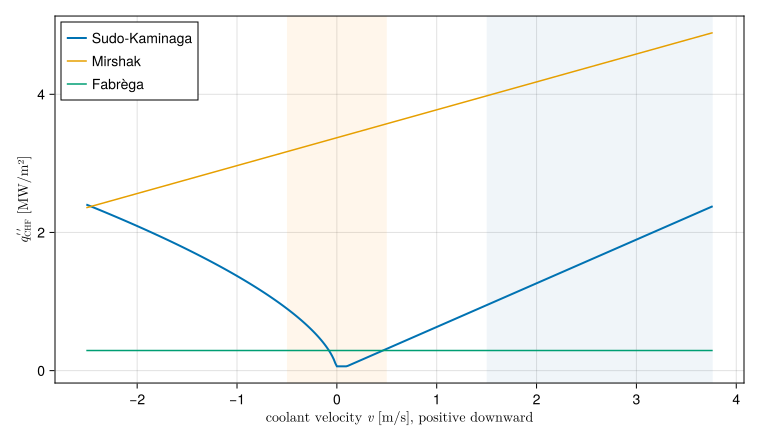

Critical heat flux
Critical heat flux (CHF) is the heat flux at which liquid can no longer keep the heated wall wet. Vapour blankets the surface, the heat transfer coefficient collapses by one or two orders of magnitude, and since the heat source does not care, the wall temperature jumps until the heat can get out through the vapour film or by radiation. For aluminium-clad research reactor fuel that jump means blistering or melting, so CHF is a limit no condition may reach.
Mechanisms
CHF is not one phenomenon, and which one sets it depends on the flow:
- Departure from nucleate boiling (DNB). At high flow and high subcooling, bubbles crowd the wall so densely that they merge into a vapour patch before liquid can rewet it. CHF then rises with flow and with subcooling, since both carry heat away from the bubble layer.
- Dryout. At high quality, the liquid film on the wall of an annular flow evaporates away. It needs saturated flow, which research reactors avoid, and none of the correlations here models it.
- Flooding. At very low, zero or reversed flow in a vertical channel, vapour rising through the channel holds back the liquid trying to reach the heated wall: counter-current flow limitation (CCFL). CHF is then set by how much liquid can get past the vapour, and it is low, a fraction of a MW/m², and nearly independent of the flow.
Normal operation of a research reactor is far into the DNB region. A loss of flow is not: during the coastdown, the flow reversal and the start of natural circulation the channel passes through low and zero flow, where the flooding limit governs. A correlation for research reactor transients must cover both, and that is what sets the three CHF correlations in STREAM apart.
Mirshak
Mirshak, Durant and Towell (Mirshak et al., 1959) measured burnout for subcooled water flowing downward through heated annuli at the Savannah River Laboratory, at low pressure and velocities above about 1.5 m/s. Their correlation is linear in each variable:
\[q''_\text{CHF} = 1.51\times10^6\,(1 + 0.1198\,v)\,(1 + 0.00914\,\Delta T_\text{sub})\, (1 + 1.9\times10^{-6}\,p)\]
in W/m², with $v$ in m/s, $\Delta T_\text{sub} = T_\text{sat} - T_b$ in K and $p$ in Pa. It is a DNB correlation for fast forced flow. Below about 1.5 m/s it is an extrapolation. STREAM evaluates it per cell with the local bulk subcooling and pressure, and with the signed velocity, so that reversed flow lowers the limit rather than raising it. That too is outside what Mirshak measured, and it should be read as a warning rather than a value.
Fabrèga
Fabrèga's low-flow correlation (Fabrèga, 1971) depends only on the hydraulic diameter and the inlet subcooling,
\[q''_\text{CHF} = 10^7\,D_h\,\big(0.023\,(T_\text{sat} - T_\text{in}) + 4.56\big)\]
in W/m², with $D_h$ in m. It is meant for slow flow, below about 0.5 m/s, and carries no dependence on flow at all, which is the behaviour of the flooding-limited region. It gives one value for the whole channel.
Sudo-Kaminaga
Sudo and Kaminaga (Sudo and Kaminaga, 1993) built a scheme for vertical rectangular channels heated from both sides, the geometry of plate fuel, from experiments at JAERI and others, including those of Mishima (Mishima et al., 1984), at pressures near atmospheric. It covers upward, downward and counter-current flow, down to zero flow, and was revised in (Kaminaga et al., 1998). It is the one of the three meant for loss-of-flow transients.
Everything is made dimensionless with the capillary length and a characteristic mass flux:
\[\lambda = \sqrt{\frac{\sigma}{g\,\Delta\rho}},\qquad G^* = \frac{G}{\sqrt{\lambda\,g\,\Delta\rho\,\rho_v}},\qquad \Delta T^* = \frac{c_p\,\Delta T_\text{sub}}{h_{fg}},\qquad q^* = \frac{q''_\text{CHF}}{h_{fg}\sqrt{\lambda\,g\,\Delta\rho\,\rho_v}},\]
with $\Delta\rho = \rho_l - \rho_v$. With $A$ the flow area, $A_h$ the heated area and $W$ the channel width, four expressions cover the regions of the map:
\[\begin{aligned} q^*_1 &= 0.005\,|G^*|^{0.611} &&\text{high flow, little subcooling}\\ q^*_2 &= \frac{A}{A_h}\,|G^*|\,\Delta T^*_\text{in} &&\text{the energy balance: all the inlet subcooling used up}\\ q^*_3 &= 0.7\,\frac{A}{A_h}\,\frac{\sqrt{W/\lambda}}{\big(1 + (\rho_v/\rho_l)^{1/4}\big)^2} \,(1 + \Delta T^*_\text{in}) &&\text{flooding at zero or counter-current flow}\\ q^*_4 &= q^*_1\left(1 + \frac{5000\,\Delta T^*_\text{out}}{|G^*|}\right) &&\text{high flow with outlet subcooling} \end{aligned}\]
The critical flux is chosen as
\[q^* = \max\big(\min(q^*_2, q^*_4),\; q^*_3\big)\quad\text{for downward flow},\qquad q^* = \max\big(\min(q^*_2, q^*_4),\; q^*_3,\; q^*_1\big)\quad\text{for upward flow}.\]
Several details follow the experiments rather than intuition, and STREAM keeps them as Python STREAM has them:
- Channel ends, not cells. The subcoolings are those of the channel's inlet ($q^*_2$, $q^*_3$) and outlet ($q^*_4$), because the correlation was fitted to whole test sections. Only the $c_p/h_{fg}$ factor is evaluated per cell.
- The width is the channel width. $W$ in $q^*_3$ is the full width,
pipe.width, not the heated width. Mishima's rectangular test section was heated over 30 mm of its 40 mm width, and the correlation was fitted with the channel width. - $1 + \Delta T^*$ rather than $1 + 3\Delta T^*$. The 1998 revision gives the subcooling factor of $q^*_3$ as $1 + 3\Delta T^*$, for counter-current flow in vertical rectangular channels. An earlier presentation of the scheme has $1 + \Delta T^*$, which is smaller and so more conservative. Python STREAM takes the conservative one, and so does STREAM.jl.
- Positive flow is downward. The branch is chosen from the sign of $\dot m$, positive taken as downward, as in Python STREAM. Only the size of $g$ is used. For a core with upward forced flow, mind which way your channel's
inletfaces.
The three side by side
The figure evaluates each correlation over a range of flows for one plate-fuel channel, 2.4 mm by 67 mm and 0.6 m long, with the bulk at 40 °C and 1.7 bar throughout. Positive flow is downward. The shaded bands are where Mirshak (right) and Fabrèga (left) were meant to be used.
using STREAM, STREAM.Thresholds, CairoMakie
CairoMakie.activate!(type="svg")
pipe = PipeGeometry_rectangular(0.6, 0.067, 0.0024, 0.067)
T_b, p = 40.0, 1.7e5
T_sat = Tsat(H2O, p)
sat = H2O(T_sat, p) # coolant at saturation
ṁ = range(-0.4, 0.6; length=401)
v = ṁ ./ (ρ(H2O, T_b) * pipe.A)
q_sk = [q_CHF_sudo_kaminaga(T_b, m, pipe, G_EARTH, sat) for m in ṁ]
q_mirshak = [q_CHF_mirshak(T_b, T_sat, p, vi) for vi in v]
q_fabrega = fill(q_CHF_fabrega(T_b, T_sat, pipe), length(ṁ))
fig = Figure(size=(760, 440))
ax = Axis(fig[1, 1]; xlabel=L"coolant velocity $v$ [m/s], positive downward",
ylabel=L"$q''_\mathrm{CHF}$ [MW/m²]")
vspan!(ax, 1.5, maximum(v); color=(:steelblue, 0.08))
vspan!(ax, -0.5, 0.5; color=(:darkorange, 0.08))
lines!(ax, v, q_sk ./ 1e6; label="Sudo-Kaminaga", linewidth=2)
lines!(ax, v, q_mirshak ./ 1e6; label="Mirshak")
lines!(ax, v, q_fabrega ./ 1e6; label="Fabrèga")
axislegend(ax; position=:lt)
fig
Near zero flow Sudo-Kaminaga falls to its flooding floor, here under 0.1 MW/m², and rises roughly linearly with the flow on either side. Mirshak, extrapolated, still predicts more than 3 MW/m² at zero flow, thirty times the flooding value: that is the danger of using a forced-flow correlation outside its range. In forced downward flow Sudo-Kaminaga is also below Mirshak for this channel, so it is the more conservative of the two there as well. Fabrèga's single value sits between them at low flow. In a loss-of-flow transient the margin that matters is the one at low flow, where Sudo-Kaminaga is the only one of the three built for the conditions.
Which to use
| Mirshak | Fabrèga | Sudo-Kaminaga | |
|---|---|---|---|
| Built from | downward flow in annuli | low-flow tests | rectangular channels heated on both sides |
| Flow | fast, $v \gtrsim 1.5$ m/s | slow, $v \lesssim 0.5$ m/s | upward, downward, zero and counter-current |
| Pressure | low | low | near atmospheric |
| Evaluated | per cell | per channel | per channel, from inlet and outlet |
| Use for | forced-flow margins | a simple low-flow check | loss of flow, natural circulation |
None of them was fitted to rod bundles. For rod fuel, check that the experiments behind a correlation are close enough to the geometry analysed before relying on it.
References
- Fabrèga, S. (1971). Le calcul thermique des réacteurs de recherche refroidis à l'eau. Technical Report CEA-R-4114 (Commissariat à l'Énergie Atomique).
- Kaminaga, M.; Yamamoto, K. and Sudo, Y. (1998). Improvement of critical heat flux correlation for research reactors using plate-type fuel. Journal of Nuclear Science and Technology 35, 943–951.
- Mirshak, S.; Durant, W. S. and Towell, R. H. (1959). Heat Flux at Burnout. Technical Report DP-355 (E. I. du Pont de Nemours & Co., Savannah River Laboratory).
- Mishima, K.; Nishihara, H. and Shibata, T. (1984). CHF Correlations Related to the Core Cooling of a Research Reactor. Technical Report JAERI-M 84-073 (Japan Atomic Energy Research Institute). International Meeting on Reduced Enrichment for Research and Test Reactors, Tokai, Japan, 1983.
- Sudo, Y. and Kaminaga, M. (1993). A new CHF correlation scheme proposed for vertical rectangular channels heated from both sides in nuclear research reactors. Journal of Heat Transfer 115, 426–434.